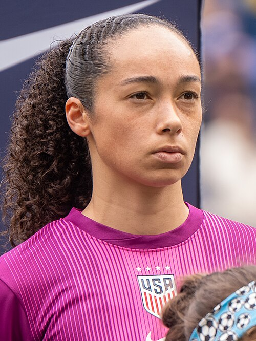

Ezzcoins › Player pages › Phallon Tullis-Joyce
83
GK

Tullis-Joyce
DIV81
HAN80
KIC79
REF83
SPD81
POS85
Photo (cropped): Bryan Berlin · CC BY-SA 4.0 · Wikimedia Commons
Photo source
https://commons.wikimedia.org/wiki/File:Phallon_Tullis-Joyce_USWNT_v_Colombia_Mar_7_2026-110_(cropped).jpg
Licence: https://creativecommons.org/licenses/by-sa/4.0
Phallon Tullis-Joyce
83 GK · Manchester Utd · Barclays WSL ·  United States
United States
No console price yet. Add this player to your watchlist on Ezzcoins: the most-watched players get a price every hour.
82Meta rating · GK −1 vs overall
DIV81
HAN80
KIC79
REF83
SPD81
POS85
- Position
- GK
- Club
- Manchester Utd
- League
- Barclays WSL
- Nation
- United States
- Skill moves
- 1★
- Weak foot
- 2★
- Preferred foot
- Right
- Football
- Women's football
Meta rating: Ezzcoins' own estimate of how well this card plays in game, worked out from its stats for each position it can play, its skill moves, weak foot and PlayStyle+. An average card scores about its overall rating; higher means it plays above its rating.
Watch on EzzcoinsMore from Manchester Utd
- 85
 Jess ParkRM
Jess ParkRM - 85
 Lea SchüllerST
Lea SchüllerST - 85Maya Le TissierCB
- 84Ella TooneCAM
- 84
 Fridolina RolföLM
Fridolina RolföLM - 82
 Andrea MedinaLB
Andrea MedinaLB - 82
 Dominique JanssenCB
Dominique JanssenCB - 82
 Elisabeth TerlandST
Elisabeth TerlandST